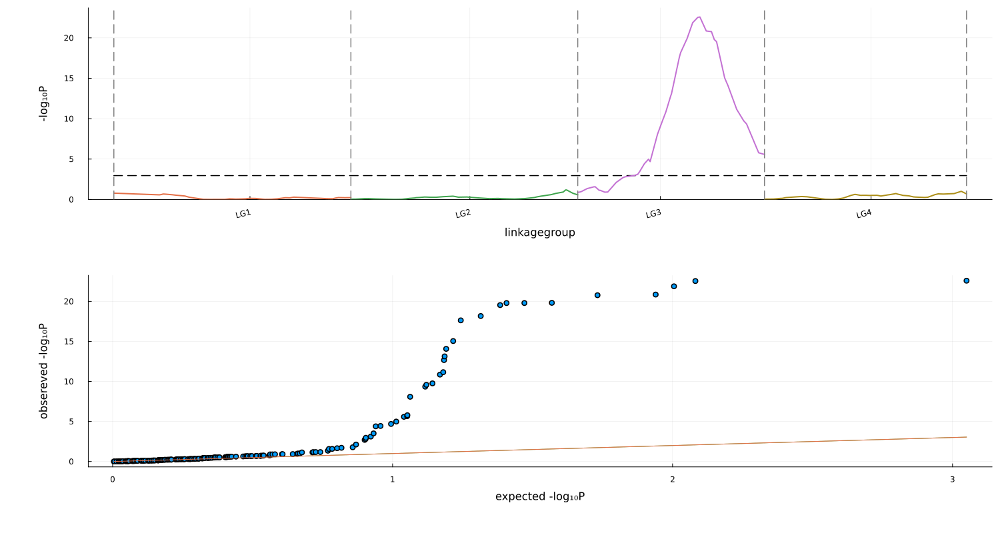

S7 MagicScan
Alternative
MagicScan performs QTL mapping by a single-QTL linear model via genomic scan. There exist more sophisticated methods using linear mixed models and multi-QTL models. It is recommended to use the statgenMPP package. Here are two key references for statgenMPP: Li et al. 2021 and Li et al. 2022. For more questions, please contact: bart-jan.vanrossum@wur.nl.
MagicScan
The input ancestryfile can be obtained from magicreconstruct with hmmalg = "forwardbackward". However, the ancestryfile resulting from hmmalg = "viterbi" does not work for magicscan.
The magicscan performs QTL mapping by scanning each marker with the simple linear model that can be specified by keyarg equation. The keyarg equation is a formula expression resulting from @formula. See StatsModels.@formula for the syntax.
For the default equation = nothing, it means lastcolumn ~ 1 where lastcolumn denotes the name of last column in the phenofile. For the default threshold = nothing, the permutation method is used to calculate the threshold for QTL detection.
# code for Julia
using StatsModels # required for @formula
using MagicScan
cd(@__DIR__)
ancestryfile = outstem*"_magicreconstruct_ancestry.csv.gz"
phenofile = outstem*"_magicsimulate_pheno.csv"
magicscan(ancestryfile,phenofile;
equation = @formula(phenotype ~ 1 + population),
outstem
)# code for Linux shell.
# For Window CMD, replace multiline key \ by ^, and replace comment-key # by ::
julia rabbit_magicscan.jl -g example_magicreconstruct_ancestry.csv.gz \
-p example_magicsimulate_pheno.csv \
-e "phenotype ~ 1 + population" \
-o exampleOutput files
| outfile | Description |
|---|---|
| outstem*"_magicscan.log" | log file |
| outstem*"_magicscan_perm.csv | logscore at siglevels for each permutation of offspring |
| outstem*"_magicscan_profile.csv | lodscore and log10 pvalue for each marker |
| outstem*"_magicscan_manhattan_qq.png | Manhattan and qq plots for the scanning profile |
| outstem*"_magicscan_peak.csv | detected QTL peaks |
Output: peak
using CSV, DataFrames
CSV.read("example_magicscan_peak.csv",DataFrame;comment="##")| Row | id | peak |
|---|---|---|
| String15 | String31 | |
| 1 | marker | snp414 |
| 2 | linkagegroup | LG3 |
| 3 | poscm | 49.9417 |
| 4 | physposbp | missing |
| 5 | loglike | -168.6087 |
| 6 | CI0.95 | 44.6673 ~ 52.4684 |
| 7 | CI0.95_marker | snp386 ~ snp404 |
using MagicBase
truepheno = MagicBase.readmultitable("example_magicsimulate_truepheno.csv")
truepheno["map_qtl"]| Row | marker | linkagegroup | poscm | leftsnp | rightsnp | allele2_effect | var_qtl | P1 | P2 | P3 | P4 |
|---|---|---|---|---|---|---|---|---|---|---|---|
| String7 | Int64 | Float64 | String7 | String7 | Float64 | Float64 | Int64 | Int64 | Int64 | Int64 | |
| 1 | qtl1 | 4 | 34.4469 | snp408 | snp409 | -1.41851 | 0.999997 | 2 | 2 | 1 | 2 |
Output: manhattan
